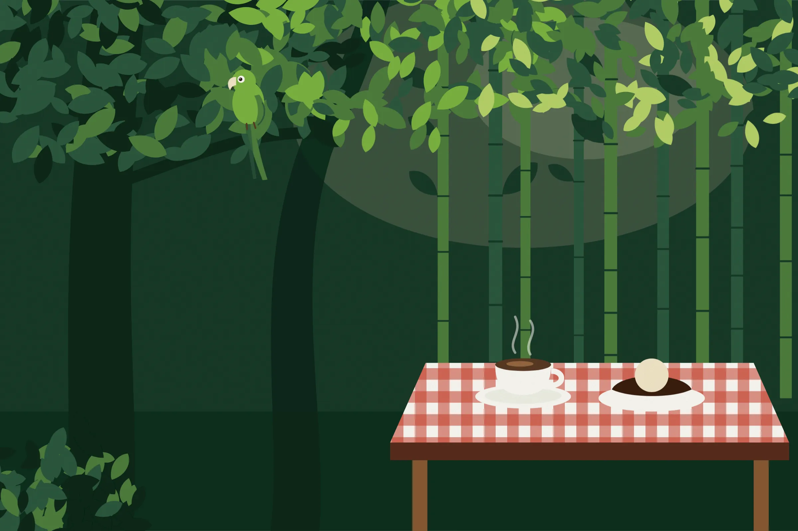
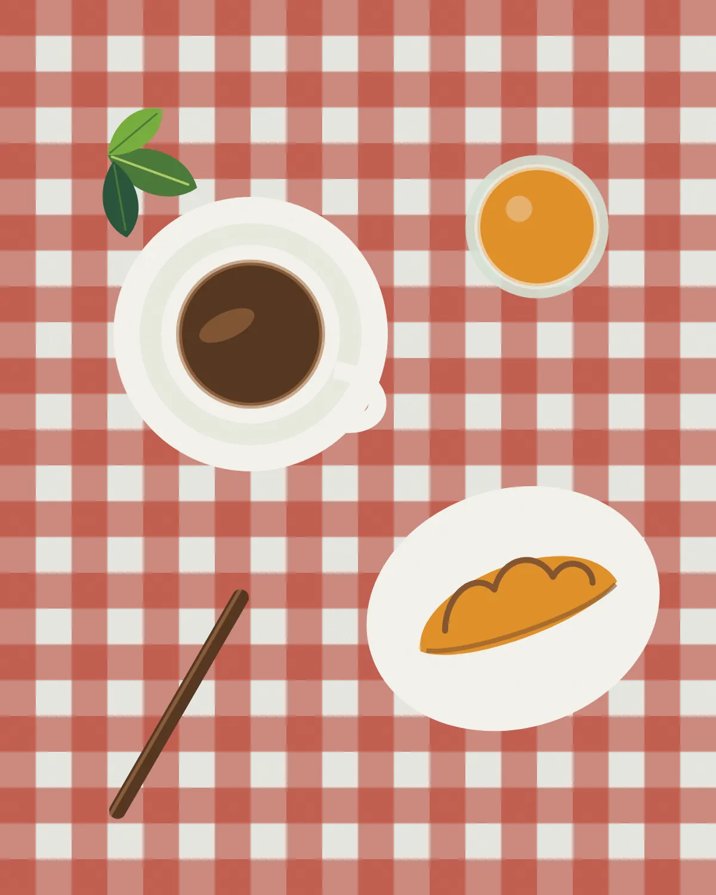
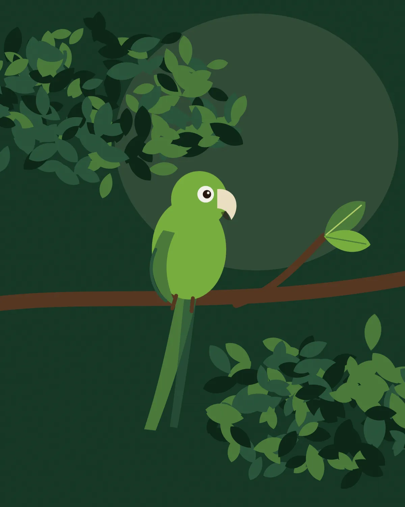
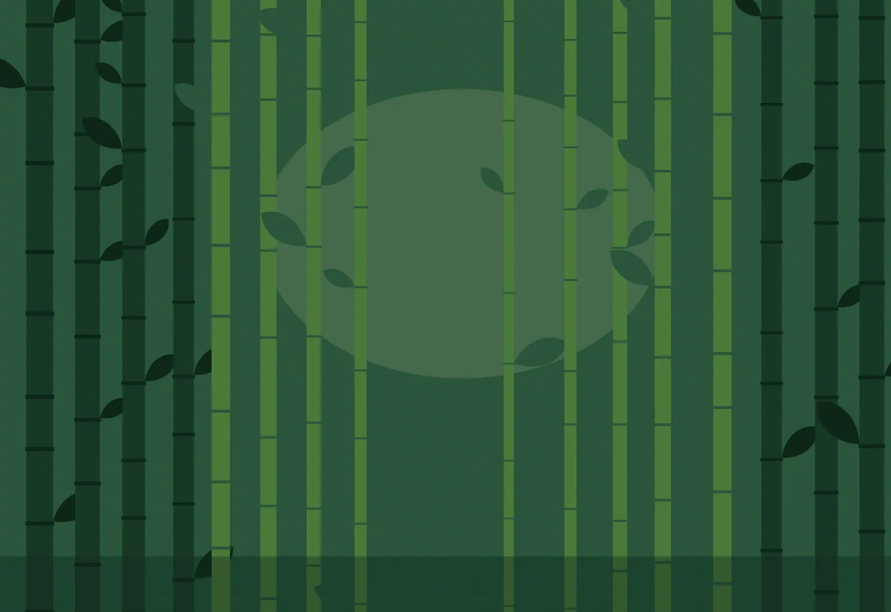

Joaquim Egídio, Campinas
Café da manhã no jardim, debaixo das árvores
Mesas de madeira entre bambus, Chocotaka de sobremesa e o cachorro junto. Na rua principal de Joaquim Egídio.

Na frente da antiga fazenda de café
O Maritakafé abriu em frente à antiga sede da fazenda de café de Joaquim Egídio. A ideia de Liliana Barretto era simples: mesas no jardim, café da manhã sem pressa e espaço para quem chega com o cachorro.
Desde 2020 a cozinha está com o chef Pedro Patrone Barretto, sobrinho de Liliana, que frequenta o café desde criança. Vieram pratos novos e outros métodos de preparo de café, e o jardim continuou do mesmo jeito.
A confirmarCafé da manhã, brunch e almoço. Doces, sucos e cafés o dia todo.
Debaixo das árvores, com visita das maritacas
As mesas de madeira ficam no jardim, entre árvores antigas e bambus. Tem parte coberta para os dias de chuva.
Cachorro é bem-vindo. Muita gente vem com o pet e fica a manhã inteira.
Maritacas, araras, esquilos e às vezes um macaquinho passam pelas árvores enquanto a mesa é servida. O nome da casa veio daí.A confirmar


Fotos do café
Mais fotos no Instagram @maritakafeAntes de vir
Posso levar meu cachorro?
Pode. O jardim recebe pets, e muita gente vem acompanhada.
Em que dias o café abre?
Os horários atualizados estão na seção Visite. Em feriados, vale confirmar antes pelo canal de atendimento.A confirmar
Precisa reservar mesa?
Resposta a combinar com o café.A confirmar
Tem opção de almoço?
Além do café da manhã e do brunch, a casa serve almoço. Pergunte qual é o prato do dia.A confirmar
Dá para fazer evento ou casamento no jardim?
Resposta a combinar com o café.A confirmar
Quais formas de pagamento são aceitas?
Resposta a combinar com o café.A confirmar
Visite
R. Dr. Heitor Penteado, 1580Joaquim Egídio, Campinas – SPCEP 13108-002(19) 99155-0038 A confirmar
Horários A confirmar
- Segunda a quarta
- Fechado
- Quinta e sexta
- 12h30 às 19h
- Sábado e domingo
- 8h às 19h
Horários vistos em guias on-line. Feriados podem mudar.
O mapa é carregado do Google Maps só quando você pedir.
Abrir no Google Maps